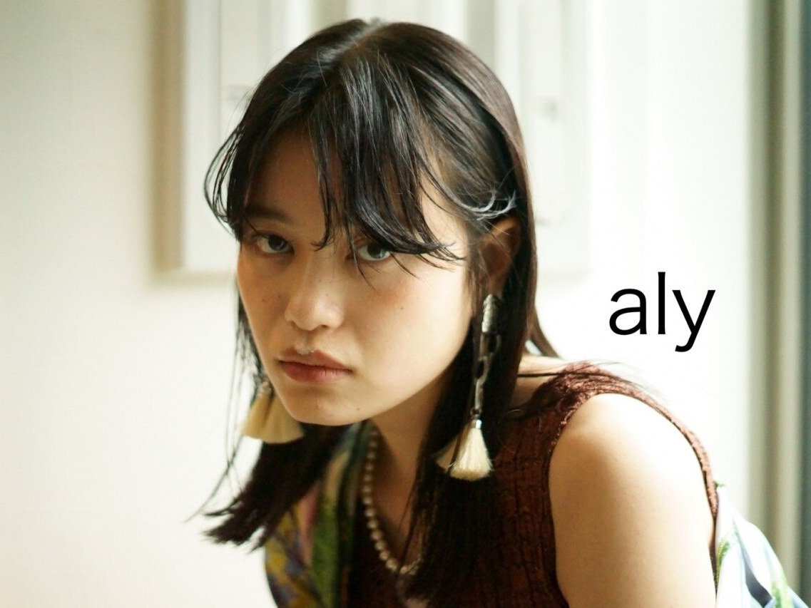
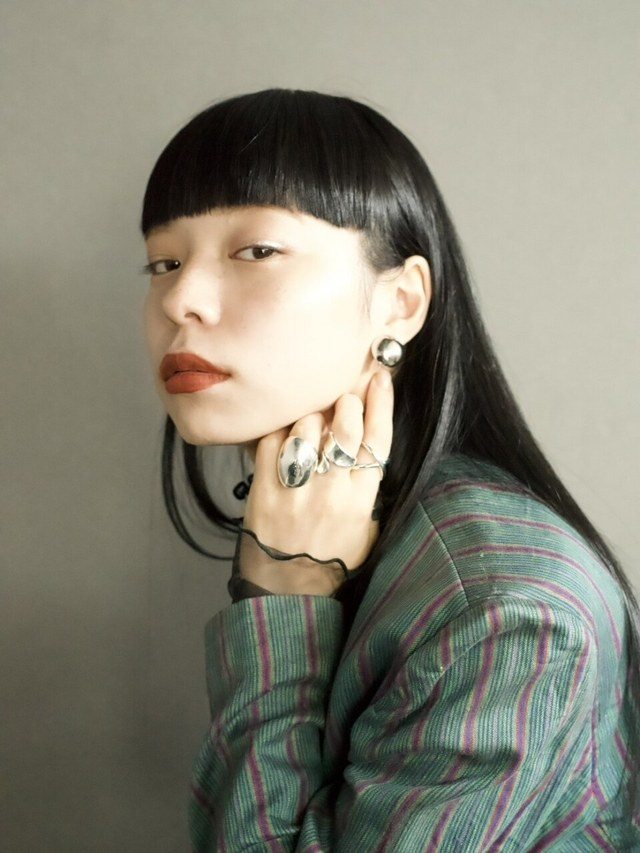
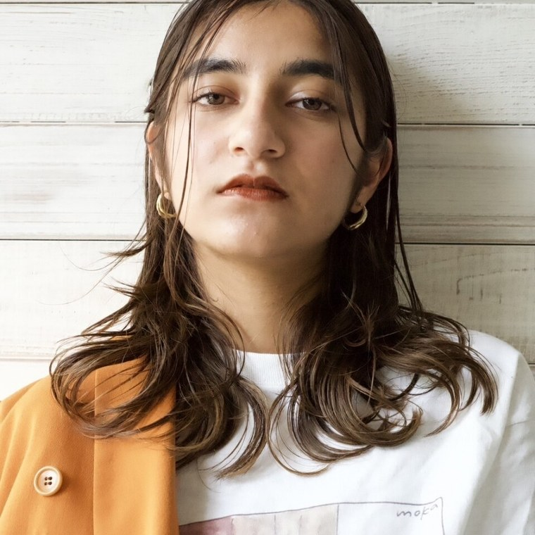
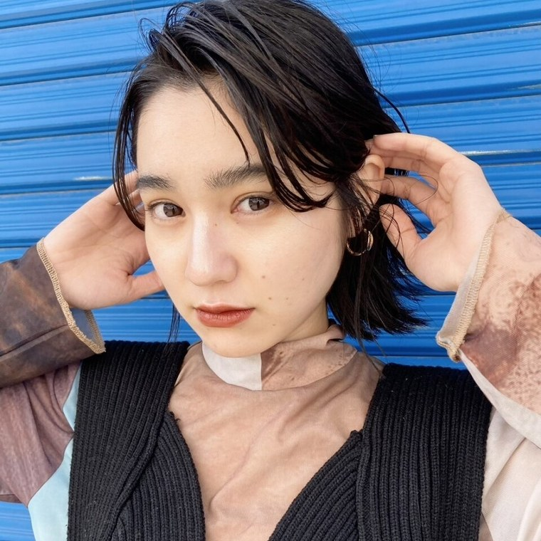
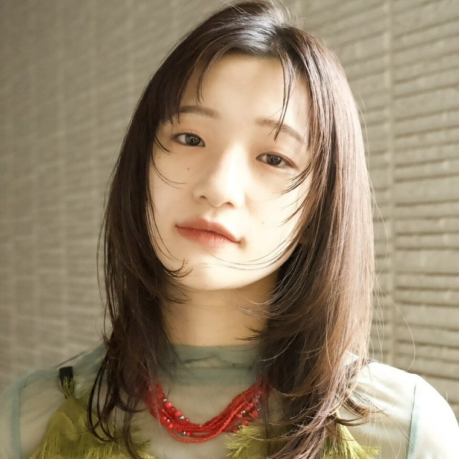

中村橋駅から歩いて2分、商店街の通り沿い、2階の隠れ家サロンです。
担当はひとり。カウンセリングからお仕上げまで通して受け持ちます。ラフに、でも整って見える。そんな髪を目指しています。ロング料金はいただきません。

担当はひとりです。カウンセリングから仕上げまで通して受け持つので、前回からの変化もふまえてご提案できます。
毎日のお手入れにかけられる時間をうかがったうえで、無理なく続けられる形を決めていきます。ヘアケアは Aujua のプログラムを軸に、髪質に合わせてカスタムします。くせが気になる方には、酸性トリートメントやケア縮毛矯正をご案内しています。ご自分へのご褒美の時間として使っていただけたらうれしいです。

ラフに、でも整って見えること
前髪をまっすぐ切りそろえた黒髪のロング。輪郭の見え方に合わせて幅を決めます。

ゆるやかなウェーブのミディアム。乾かし方もあわせてお伝えします。

襟足を締めたショートボブ。短い部分ほど切り方で印象が変わります。

ラベンダー系のレイヤー。ダブルカラーで色味をつくります。
※ 写真はサロンが公開しているスタイル例です。
※ 店内・外観の写真は公開されているものを確認できなかったため、このページには掲載していません（No Data）。
ご予約・お問い合わせは、
お電話または下記フォームより承っております。
夜21時まで営業しています。お仕事帰りにもどうぞ。
※本サイトはサンプルのため送信されません。
実際のご予約はお電話にて承ります。